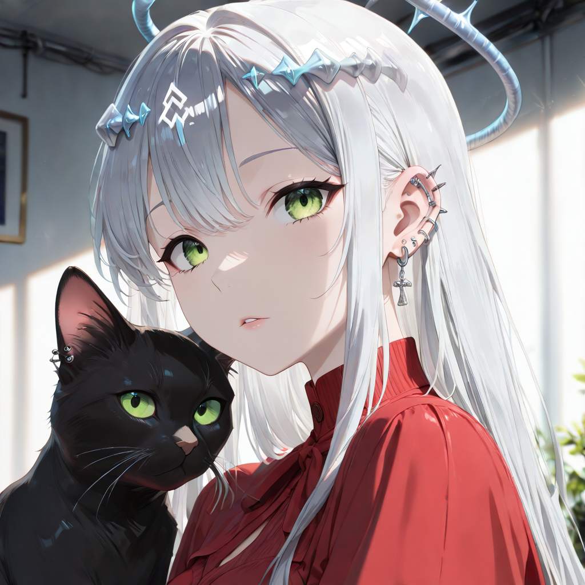
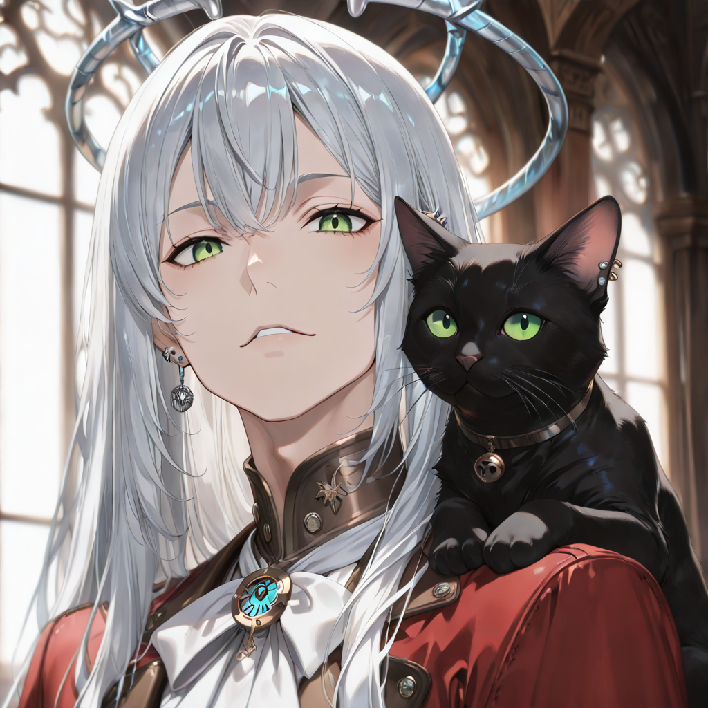
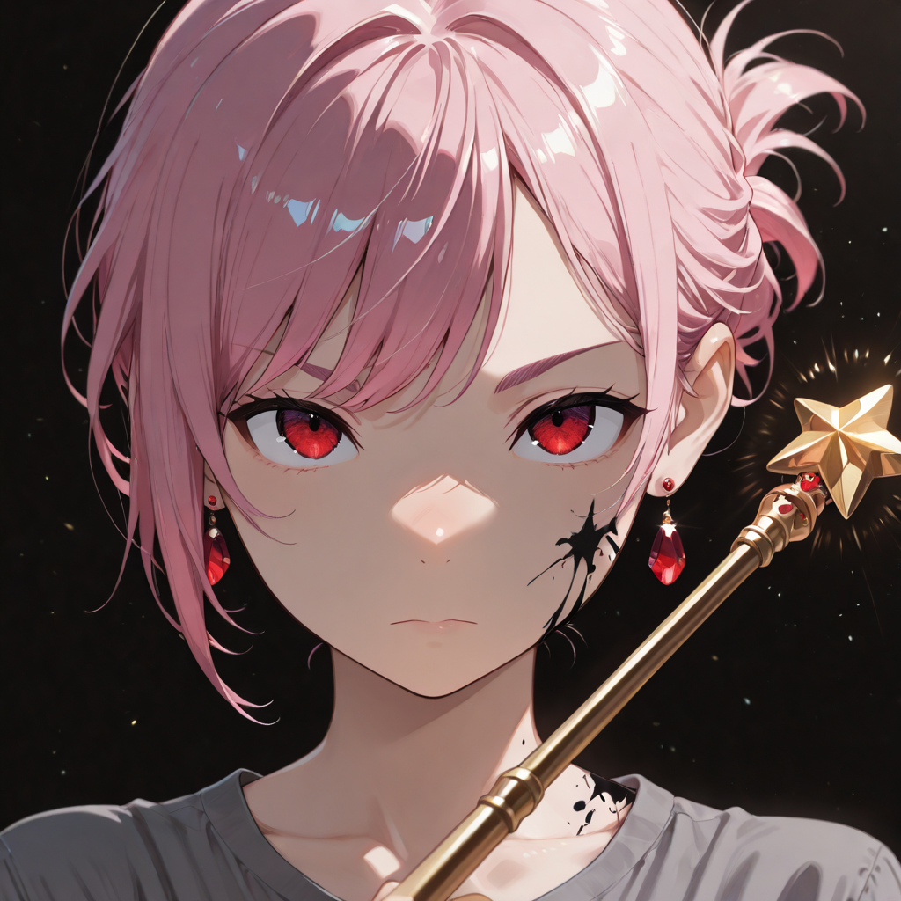
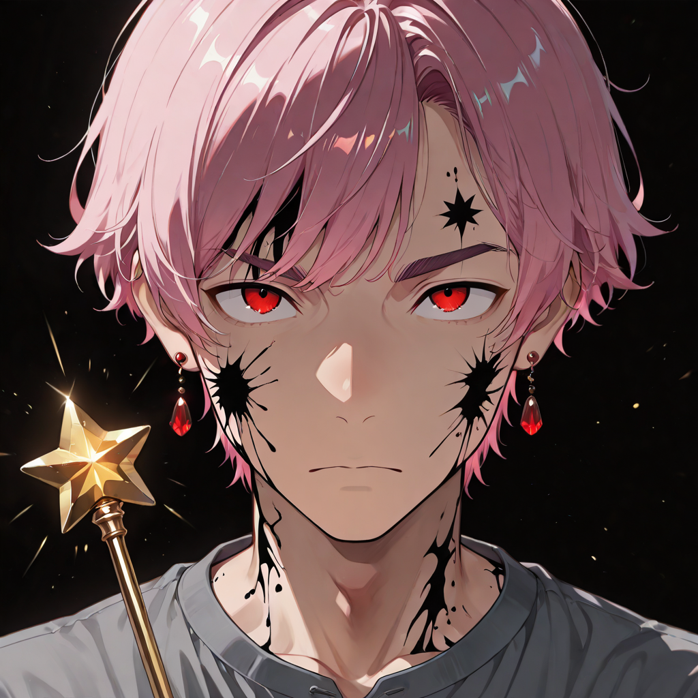
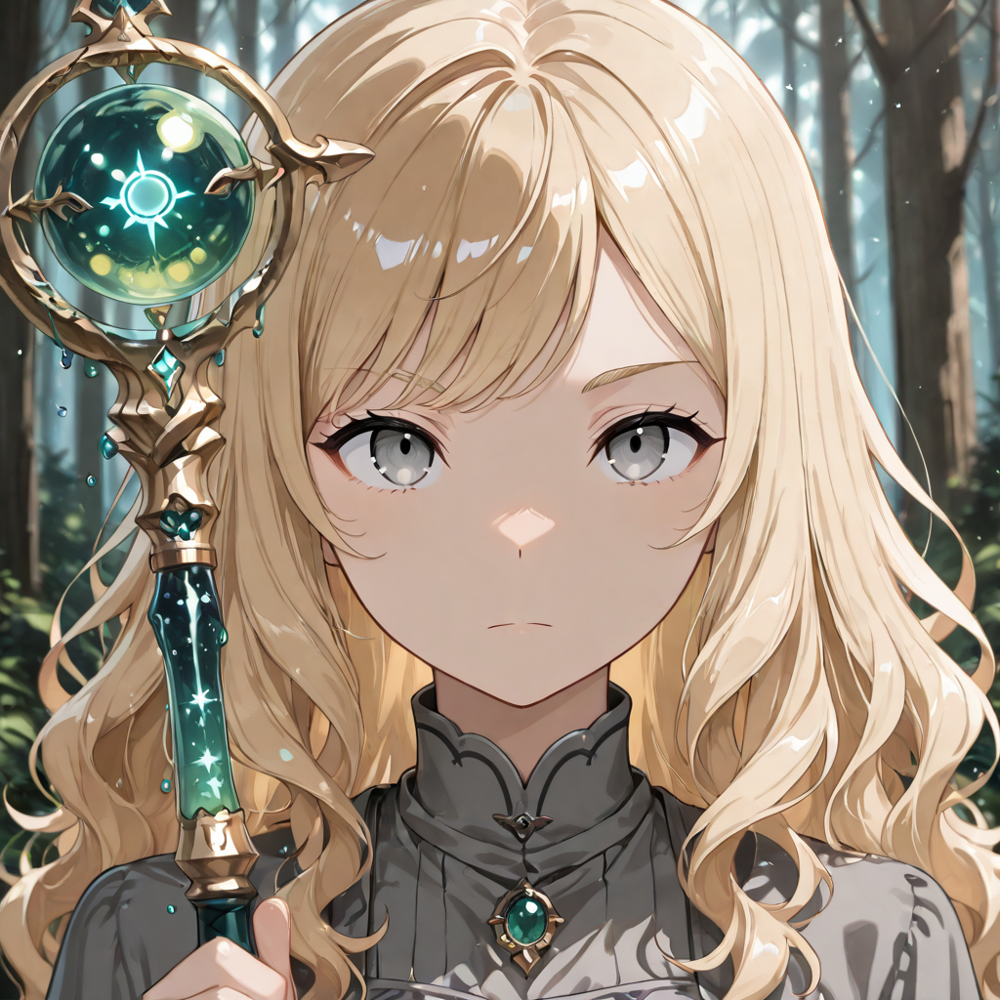
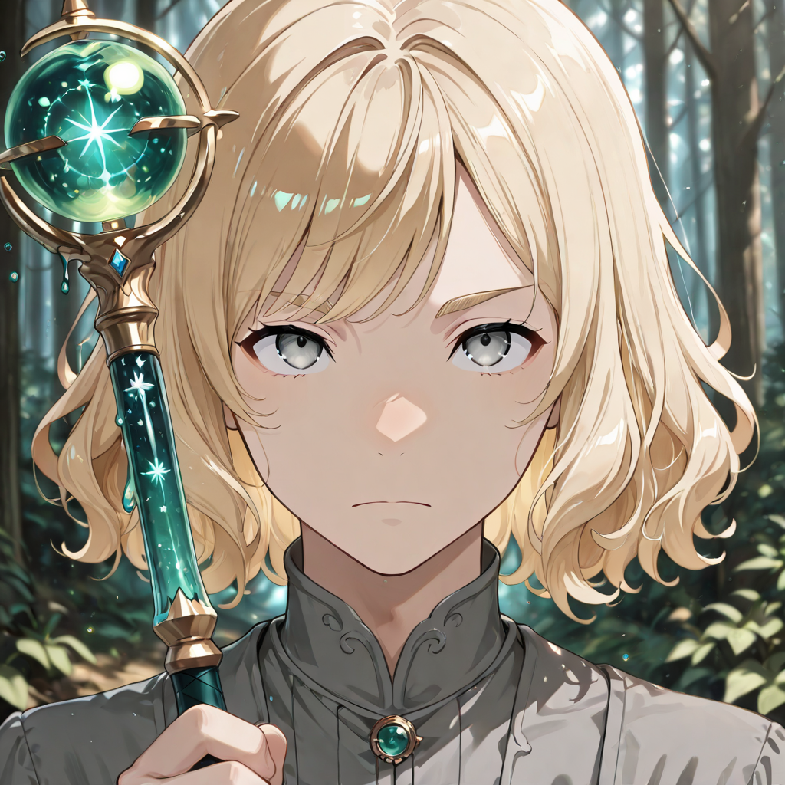
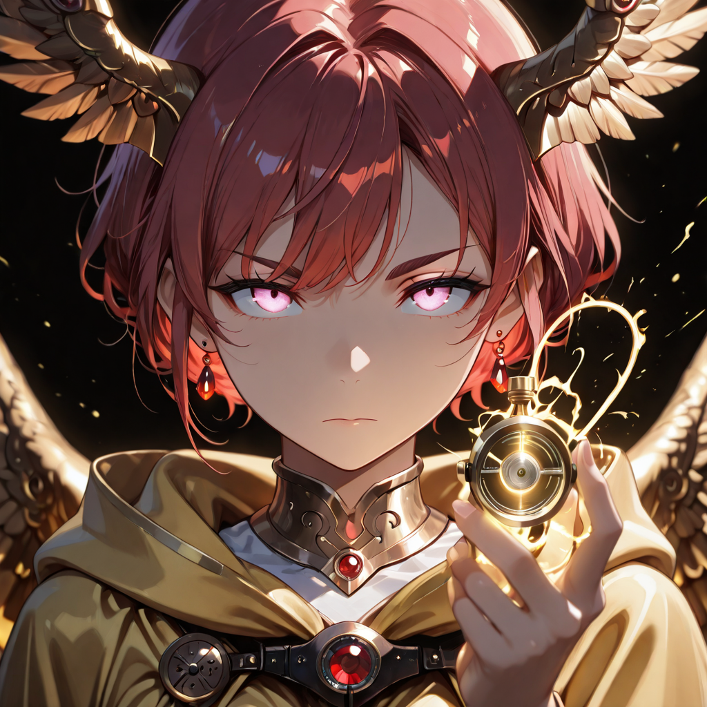
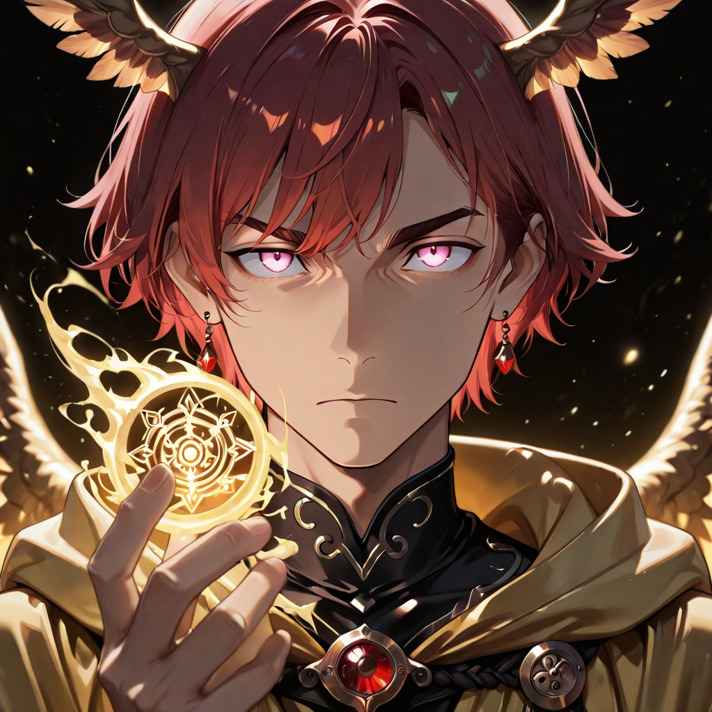
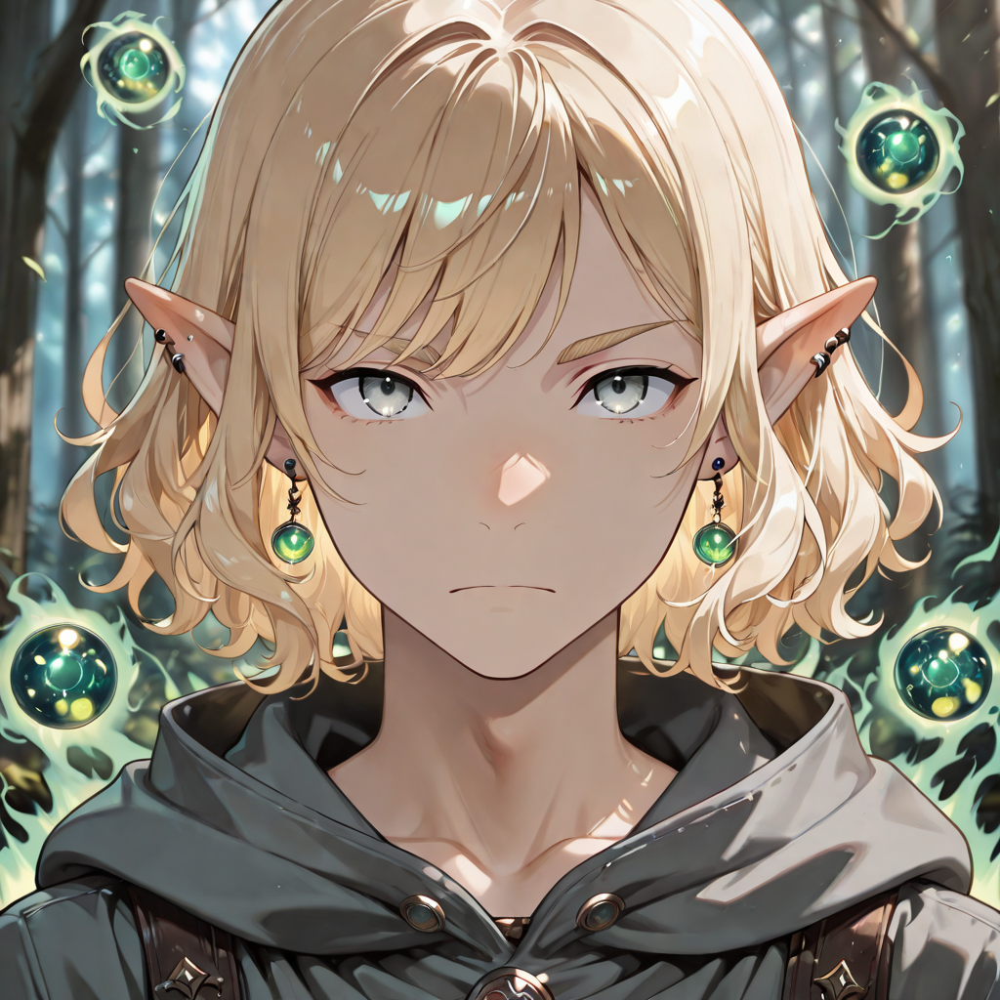

Accelerating the Inevitable
The Araldi della Polvere are born from the souls of those who used the mind as their primary weapon in life: scholars, judges, architects, and sorcerers. In the rebirth process, Malicott does not grant them the physical strength of the Arborei or the fluidity of the Shadows, but something subtler and more absolute: control over matter at its final stage , Dust. Around an Araldo there is always a "dead zone." The air is dry, grass yellows instantly. Their breath is cold enough to crack the skin of those who stand too close.
Within the Empire of the Forgotten, the term "Valkyrie" has shed its mythological meaning tied exclusively to gender, evolving into a Functional Title. The Empire teaches that the body is merely a garment. Only in the Araldi branch can the soul imprint itself where it previously could not, because it possesses the quality of "Judgment from Above." The magic enabling flight and manipulation of ashen energy requires an aerodynamic and lightweight form. The ritual of transformation modifies the subject's skeletal structure, making them more slender, graceful, and androgynous.
Their two paths diverge on the nature of their power: the Light path channels radiant energy, burning and purifying. The Wind path controls air and kinetic force, scattering enemies and riding the storm. Both paths converge in the Seraph Mage, who has transcended the separation between light and wind entirely.

Active Roster


Prince
Arcane commanders who govern the battlefield through magical authority. Their presence amplifies the destructive potential of every caster under their command.

Ash Fruit
The seed of an Araldo , a nascent ash being, barely cohesive, with only the faintest spark of magical control. The dead zone around them is small but unmistakable.


Corrupted Light Mage
Mages whose radiant power has not yet been fully refined through the rebirth process. Their light burns with unstable, corrupted energy , dangerous to both friend and foe.


Corrupted Wind Mage
Mages whose mastery of air is real but uncontrolled. Their winds tear without direction, carrying the dust of decay in every gust they summon.


Light Mage
Purified channelers of radiant energy. The corruption has been shed, and what remains is focused, precise, and searing. Their light does not warm , it judges.


Wind Mage
Commanders of storm and gale. The chaos within them has crystallized into intent. They reposition entire formations with a gesture.


Sun Valkyrie
Warriors who have undergone the skeletal transformation ritual and received Malicott's feather. They rain solar devastation from above, embodying radiant judgment in its purest aerial form.


Storm Elf
Elven souls who have reclaimed their identity and fused it with the storm. They ride cyclones, chain lightning between enemies, and leave devastation crackling across the battlefield.


Seraph Mage
The complete expression of the Araldi. Light and Wind are no longer distinct forces , they are one breath. A Seraph Mage does not cast spells; they simply are the storm, and they simply are the sun.